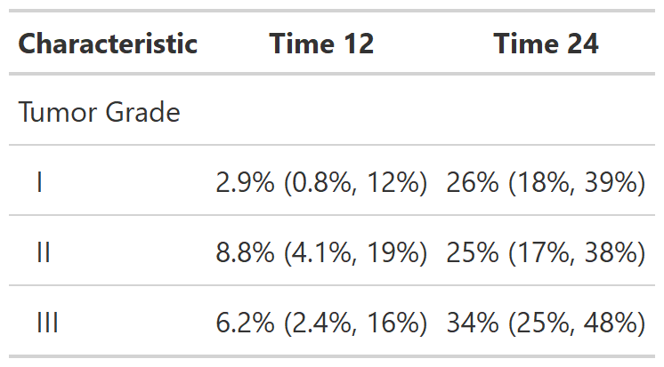

![[Experimental]](../help/figures/lifecycle-experimental.svg) Function takes a
Function takes a survfit object as an argument, and provides a
formatted summary table of the results
| tbl_survfit {gtsummary} | R Documentation |
Function takes a survfit object as an argument, and provides a
formatted summary table of the results
tbl_survfit(x, ...) ## S3 method for class 'list' tbl_survfit( x, times = NULL, probs = NULL, statistic = NULL, label = NULL, label_header = NULL, estimate_fun = NULL, missing = NULL, conf.level = 0.95, reverse = FALSE, quiet = NULL, ... ) ## S3 method for class 'survfit' tbl_survfit(x, ...) ## S3 method for class 'data.frame' tbl_survfit(x, y, include = everything(), ...)
x |
a survfit object, list of survfit objects, or a data frame. If a data frame is passed, a list of survfit objects is constructed using each variable as a stratifying variable. |
... |
For |
times |
numeric vector of times for which to return survival probabilities. |
probs |
numeric vector of probabilities with values in (0,1) specifying the survival quantiles to return |
statistic |
string defining the statistics to present in the table.
Default is |
label |
List of formulas specifying variables labels,
e.g. |
label_header |
string specifying column labels above statistics. Default
is |
estimate_fun |
function to format the Kaplan-Meier estimates. Default
is |
missing |
text to fill when estimate is not estimable. Default is |
conf.level |
Confidence level for confidence intervals. Default is 0.95 |
reverse |
Flip the probability reported, i.e. |
quiet |
Logical indicating whether to print messages in console. Default is
|
y |
outcome call, e.g. |
include |
Variable to include as stratifying variables. |
Example 1

Example 2

Example 3

Example 4

Daniel D. Sjoberg
Other tbl_survfit tools:
add_n.tbl_survfit(),
add_nevent.tbl_survfit(),
add_p.tbl_survfit(),
modify,
tbl_merge(),
tbl_stack()
library(survival)
# Example 1 ----------------------------------
# Pass single survfit() object
tbl_survfit_ex1 <- tbl_survfit(
survfit(Surv(ttdeath, death) ~ trt, trial),
times = c(12, 24),
label_header = "**{time} Month**"
)
# Example 2 ----------------------------------
# Pass a data frame
tbl_survfit_ex2 <- tbl_survfit(
trial,
y = Surv(ttdeath, death),
include = c(trt, grade),
probs = 0.5,
label_header = "**Median Survival**"
)
# Example 3 ----------------------------------
# Pass a list of survfit() objects
tbl_survfit_ex3 <-
list(
survfit(Surv(ttdeath, death) ~ 1, trial),
survfit(Surv(ttdeath, death) ~ trt, trial)
) %>%
tbl_survfit(times = c(12, 24))
# Example 4 Competing Events Example ---------
# adding a competing event for death (cancer vs other causes)
set.seed(1123)
library(dplyr, warn.conflicts = FALSE, quietly = TRUE)
trial2 <- trial %>%
mutate(
death_cr = case_when(
death == 0 ~ "censor",
runif(n()) < 0.5 ~ "death from cancer",
TRUE ~ "death other causes"
) %>% factor()
)
survfit_cr_ex4 <-
survfit(Surv(ttdeath, death_cr) ~ grade, data = trial2) %>%
tbl_survfit(times = c(12, 24), label = "Tumor Grade")